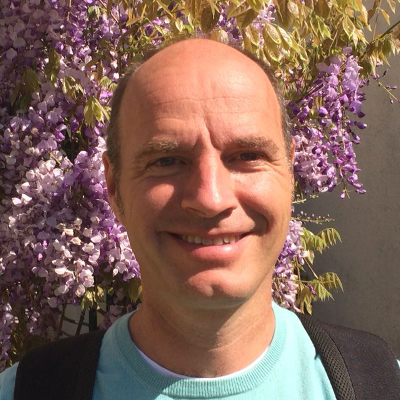

My Akashic Records Consultation with Noel has been so amazingly accurate. As expected, it gave me a clear direction in my life.
What I really appreciate is that I felt Noel went an extra mile to provide me with clarity in many areas of my life. I’m truly grateful for his guidance and I’m sure that this would be beneficial to many more like me.
Best wishes with love and light for his Spiritual Journey! Satnam.
What I really appreciate is that I felt Noel went an extra mile to provide me with clarity in many areas of my life. I’m truly grateful for his guidance and I’m sure that this would be beneficial to many more like me.
Best wishes with love and light for his Spiritual Journey! Satnam.
Upeksha Perera, Yoga Instructor, Sri Lanka
Noel has a calm and reasoned way of explaining what the concept of the Akashic Records are. I resonate with the information received during our session. And I've incorporated it into my wider understanding of Self.
Irshad Azeez, Student, Sri Lanka
Prior to the Akashic Records Consultation, I had a strong feeling I need to have one. Curiosity aside, I wanted to get in touch with the spiritual part of me for guidance.
The session gave me reassurance in my decision that I need to make. It definitely helped me gain more clarity in certain aspect of my life at that point of time.
After one month from the Akashic Records Consultation, I am no longer stuck in the questions I had and have moved on with confidence. Definitely will be contacting Noel for more sessions.
The session gave me reassurance in my decision that I need to make. It definitely helped me gain more clarity in certain aspect of my life at that point of time.
After one month from the Akashic Records Consultation, I am no longer stuck in the questions I had and have moved on with confidence. Definitely will be contacting Noel for more sessions.
Charlene Ng, Always Chasing for Answers, Malaysia/Singapore
The session has been really amazing.
It gives me much clarity on why I feel the way I feel and why things may be happening to me in life the way it is currently. It allowed me to better plan for what’s ahead.
Thanks Noel!
It gives me much clarity on why I feel the way I feel and why things may be happening to me in life the way it is currently. It allowed me to better plan for what’s ahead.
Thanks Noel!
Charmain Tan, Forbes 30 Under 30 Asia 2019/Serial Entrepreneur, Singapore
I had an Akashic Record reading by Noel around 3 months back and waited to see the actual truth behind the things he told me.
To my surprise a lot of those things happened exactly the way it was foretold. Since then, it has drastically changed my way of looking at life. I am now living life with awareness.
Many thanks to Noel by using his gift for the timely insight. Looking forward to more such readings by him. God bless you Noel.
To my surprise a lot of those things happened exactly the way it was foretold. Since then, it has drastically changed my way of looking at life. I am now living life with awareness.
Many thanks to Noel by using his gift for the timely insight. Looking forward to more such readings by him. God bless you Noel.
Chitra, Seeker, India/Singapore
My session with Noel has affirmed my purpose and the support I needed as I walk my spiritual path.
It has also shed light onto the patterns that were limiting me so that I could take the right remedial actions.
The biggest piece of advice for me was the self care I needed to allow me to better serve my purpose.
It has also shed light onto the patterns that were limiting me so that I could take the right remedial actions.
The biggest piece of advice for me was the self care I needed to allow me to better serve my purpose.
Joanna Ash, Intuitive Consultant, Singapore
I was intrigued when I first became aware of the Akashic Records and was pleased to have a session with Noel. I was asked to prepare my questions thoughtfully.
Noel explained everything in detail and I felt very comfortable. He opened my records and before he was finished speaking, all my questions were answered.
I'm so happy to have this tool as a resource. Noel was very good handling these sensitive matters in my life. He has clarified much that was troubling me.
Noel explained everything in detail and I felt very comfortable. He opened my records and before he was finished speaking, all my questions were answered.
I'm so happy to have this tool as a resource. Noel was very good handling these sensitive matters in my life. He has clarified much that was troubling me.
Carol Litt, Artist, USA
Sometimes there are people in your life who think they know what is best for you and then there are the ones that support you to be the true you, by just being their true selves and sharing their inner strengths and beauty with you.
Noel, not only provided a safe and nurturing environment during my Akashic Records session, he showed me how to have a better understanding of my inner-self through opening his heart and sharing his gifts with me.
I am eternally grateful for this experience. Much love and light Noel. Thank you!
Noel, not only provided a safe and nurturing environment during my Akashic Records session, he showed me how to have a better understanding of my inner-self through opening his heart and sharing his gifts with me.
I am eternally grateful for this experience. Much love and light Noel. Thank you!
Maryam Shamsul, Love Being, Australia/Malaysia
Noel is a gifted and gentle human being. When the records were opened, he immediately identified the two issues I wanted to get clarification on.
His approach was gentle but empowering and the guidance I received has helped me to move forward. He also makes extra efforts to follow up after the reading.
Thank you, Noel!
His approach was gentle but empowering and the guidance I received has helped me to move forward. He also makes extra efforts to follow up after the reading.
Thank you, Noel!
UMA NARAYANASAMY, FINANCE MANAGER, SINGAPORE/SRI LANKA
Noel has a very gentle approach. He takes time to explain and offers tools to prepare questions. Very grounded, his calm energy makes it a very deep experience, allowing safety and warmth. He takes very simple steps and explains them clearly. The replies are clear, immediate and thorough. Noel also offered time to discuss and share about the experience, after the reading.
So one is not left alone, puzzled by some replies…it makes the experience smooth. Thank you Noel! Your loving heart and open mind is a gift that I am grateful you share with us!
So one is not left alone, puzzled by some replies…it makes the experience smooth. Thank you Noel! Your loving heart and open mind is a gift that I am grateful you share with us!
Patricia Zahnbrecher, Mother, Healer, Teacher, Artist and Light Seeker, France/Singapore
My reading with Noel was insightful, beautiful and articulate. I am relatively new to the Akashic Records and my session validated a lot of my current understanding and relationship with the masters and teachers.
Noel eloquently communicated what I needed to learn, know and grow from all the while cultivating a safe space for me to open my heart and connect in the process. The wisdom transferred resonated on a cellular level of my being and has been extremely helpful in cultivating a deepened understanding of my present and path forward in the future.
I take away heartfelt knowing that I am being guided, supported and loved. Thank you Noel!
Noel eloquently communicated what I needed to learn, know and grow from all the while cultivating a safe space for me to open my heart and connect in the process. The wisdom transferred resonated on a cellular level of my being and has been extremely helpful in cultivating a deepened understanding of my present and path forward in the future.
I take away heartfelt knowing that I am being guided, supported and loved. Thank you Noel!
Daniela, Wonder Woman, Hong Kong/USA
I met with Noel for an Akashic Records consultation in Chiang Mai. I couldn’t believe how much valuable information was presented to me in all aspects of my life. Noel was able to shed light on every question I had coming into the reading- from career advice, past lives, to parental and intimate relationships.
With no prior knowledge about myself, Noel’s information always hit the nail on the head! He was also very generous with his time and flexible with our appointment scheduling.
I would highly recommend Noel to anyone searching for answers on their life’s journey. Noel is a super warm, genuine and talented human and I feel blessed to have encounter him and his gift! Many thanks.
With no prior knowledge about myself, Noel’s information always hit the nail on the head! He was also very generous with his time and flexible with our appointment scheduling.
I would highly recommend Noel to anyone searching for answers on their life’s journey. Noel is a super warm, genuine and talented human and I feel blessed to have encounter him and his gift! Many thanks.
Rachel Fisher, Jedi Nomad, USA
As soon as you meet Noel you know that he is genuinely connected with the Akashic Records, and that you'll receive a reading given with clarity and integrity.
The great thing about Noel is that he's in total service, and dedicated to guiding and supporting people with finding their highest purpose and next steps in life. Thank you Noel for an excellent reading!
The great thing about Noel is that he's in total service, and dedicated to guiding and supporting people with finding their highest purpose and next steps in life. Thank you Noel for an excellent reading!
Kate Elena, Certified Tantric Journey Educator, England

The reason I asked Noel to give me an Akashic Records consultation, was my wish to connect with the Universe and my spiritual guides about important choice in my life related to work. I had many options and some fears and expectation related to them. I also had questions for my love life.
I trusted Noel immediately when I first met him. During the session, Noel read my Akashic Records and he gave me very valuable information, helping me a lot. Although some information was not nice to know or sad, other things made me feel more relax about my future work or made me really happy. I was confirmed in my feeling about my partner being a partner for life!
So still after two month, I am still happy with this consult! It helped me in a very deep level during a dynamic time in my life
I trusted Noel immediately when I first met him. During the session, Noel read my Akashic Records and he gave me very valuable information, helping me a lot. Although some information was not nice to know or sad, other things made me feel more relax about my future work or made me really happy. I was confirmed in my feeling about my partner being a partner for life!
So still after two month, I am still happy with this consult! It helped me in a very deep level during a dynamic time in my life
Jeroom Remmers, Sustainability Professional/Public Affairs, Netherlands
I had my first Akashic reading done on the 3rd of November 2017 with Noel and I’m very impressed and happy with the whole session. Noel indeed is a gifted Akashic reader and Channeller.
This session with Noel has helped me to reaffirm which spiritual path I would prefer in my future years to come and also who my spirit guides are. It was a very light and joyful session and I enjoyed the time spent with him during the reading.
Thank you Noel for a lovely and enlightening reading. May you be blessed always to carry on this good work to help all sentient beings.
This session with Noel has helped me to reaffirm which spiritual path I would prefer in my future years to come and also who my spirit guides are. It was a very light and joyful session and I enjoyed the time spent with him during the reading.
Thank you Noel for a lovely and enlightening reading. May you be blessed always to carry on this good work to help all sentient beings.
Dr. Deron Ling, Doctor of Holistic Medicine and Spiritual Coach, Singapore

Noel’s Akashic Record session was very well guided with explanation and preparing one to be relaxed to slowly gets into the flow of the session.
Very much based on neutrality and channeled what he perceived from the energy that he picked up in the questionings that one have.
My session was exactly what I sensed and he picked it up intuitively, merely reflected back to me what I already know and affirmed my conclusions about my path in that moment. Insightful and beautiful light at the same time.
Very much based on neutrality and channeled what he perceived from the energy that he picked up in the questionings that one have.
My session was exactly what I sensed and he picked it up intuitively, merely reflected back to me what I already know and affirmed my conclusions about my path in that moment. Insightful and beautiful light at the same time.
Jada Jane Boh, 5Rhythms Sweat Spaceholder, Singapore
Noel’s akashic reading was very informative and incredibly useful. The process is really smooth and effortless as he guides himself to a place where he channels any information that you require - about your job, your location, your health, your love life, your relationships, any blocks you have.. the guidance I received was very important for me and I left with a new sense of purpose and a direction that I trusted, not to mention a spring in my step. A very worthwhile process if you need to consult the higher realms about key decisions or events in your life. Thank you Noel!
Tim Sandars, Galactic Nomad, England
Noel comes across as a person who is gentle and knowledgeable in his work and is very professional at the same time. He was patient in explaining to me what are the Akashic Records and it's process.
I have had several of my questions answered from the reading and this helps me to have clarity and affirmations of my work and moving forward towards my goals. I feel much love from my Masters and Guides. Thank you Noel!
I have had several of my questions answered from the reading and this helps me to have clarity and affirmations of my work and moving forward towards my goals. I feel much love from my Masters and Guides. Thank you Noel!
Lay Lee, Founder of Qi New Age & Healing, Singapore
Noel is such a gifted, loving and vibrating soul!!!!
Before I was blessed to have an Akashic Records reading with Noel, I met him at a cafe together with other friends.
At that time, I was having personal challenges. I felt extremely vulnerable and I couldn't stop crying in the middle of the group conversation. Noel was holding such a safe and loving space for me to let my tears flow even though that was our first meeting.
There was no shallow sympathy but his strong yet zen energy inside was REAL.
When it comes to spiritual consultations, I honestly prefer women facilitators just because I am a woman and have been devoted to mystical dancing for a long time. But for the very first time, I felt very comfortable with a male practitioner and I decided to take his Akashic Records reading.
The Akashic Records sounded familiar but I had no concrete idea what it was about. Noel gave me clear guidance before we started. The reading itself was totally different (almost opposite) from what I was thinking of doing but I guess this is what the Akashic Records is about. I feel that it has opened a new door for "spiritual growth" and I am very grateful for him guiding me to the path. I am sure as I walk in my journey, I will come back to Noel to keep listening to my higher self and humbly receive wisdom.
Thank you, Noel!
Before I was blessed to have an Akashic Records reading with Noel, I met him at a cafe together with other friends.
At that time, I was having personal challenges. I felt extremely vulnerable and I couldn't stop crying in the middle of the group conversation. Noel was holding such a safe and loving space for me to let my tears flow even though that was our first meeting.
There was no shallow sympathy but his strong yet zen energy inside was REAL.
When it comes to spiritual consultations, I honestly prefer women facilitators just because I am a woman and have been devoted to mystical dancing for a long time. But for the very first time, I felt very comfortable with a male practitioner and I decided to take his Akashic Records reading.
The Akashic Records sounded familiar but I had no concrete idea what it was about. Noel gave me clear guidance before we started. The reading itself was totally different (almost opposite) from what I was thinking of doing but I guess this is what the Akashic Records is about. I feel that it has opened a new door for "spiritual growth" and I am very grateful for him guiding me to the path. I am sure as I walk in my journey, I will come back to Noel to keep listening to my higher self and humbly receive wisdom.
Thank you, Noel!
Nashwa, Sacred Earth Mystical Dance Instructress & Founder of Nashwa Bliss, Japan/Singapore
I felt curious and eager to have a session with Noel. Right from the beginning I sensed he was highly connected and aligned for the best outcome of the session. The information I received from the session made a lot of sense and resonated deeply in myself. I believe Noel is a lightful and truthful compassionate professional that helps others to better travel their inner journey. I am fully convinced that having soul level information allows me to be more aligned and confident in my life, thank you Noel.
Angelique Miralles, Conscious Leadership Coach, France
Like a messenger from heaven, Noel came into my life at a time when I needed answers the most. It was no coincidence that he came into my life when he did, and it's no coincidence that you're reading this now.
If you are open and ready, you will find exactly what you're looking for. All you have to do is ask. This is how my reading went:
Before my reading, I was excited and just a little bit nervous. I knew this was a significant opportunity to get answers to the burning questions I had about my life. I was running over all the questions in my mind to get the most out of the session as possible, and I was preparing myself to accept every answer I'd receive, good or bad.
(To get the most out of your session:
Have a list of questions ready, questions that are meaningful to you and your life, whatever they may be. And be prepared for the possibility of getting through all of them, or getting through only one.
Be as specific with each question as possible.)
To start the reading, Noel led me through a meditation that caused any anxiety to disappear and left me incredibly centered, comfortable, and calm.
After the meditation, I was allowed to start asking questions. I was so calm and centered that I held the silence for a few more moments, so Noel started by speaking about my life, about the phase of life I was in and what was most important for me to know and do, without me having said a single word.
Every bit of it was true and accurate, and there was no way he could have made this up with this himself. This confirmed that the answers were not coming from him, but from a different source.
So I asked my questions, one after another, gaining clarity and insight with each answer received.
By the end of the session, I was simply amazed at how clearly I knew where to take my life from there. To my surprise, I received answers to all my most important questions, and I was even able to ask questions I didn't think we would have time for.
In the days following the reading, events foreshadowed in the reading occurred just as I was told they would. There’s no doubt in my mind that this is the real deal - if you are even the tiniest bit interested in a consultation, you should absolutely do it.
But even if you don't do this now, keep it in the back of your mind. And when you or someone you know needs it, you will know where to go for answers.
If you are open and ready, you will find exactly what you're looking for. All you have to do is ask. This is how my reading went:
Before my reading, I was excited and just a little bit nervous. I knew this was a significant opportunity to get answers to the burning questions I had about my life. I was running over all the questions in my mind to get the most out of the session as possible, and I was preparing myself to accept every answer I'd receive, good or bad.
(To get the most out of your session:
Have a list of questions ready, questions that are meaningful to you and your life, whatever they may be. And be prepared for the possibility of getting through all of them, or getting through only one.
Be as specific with each question as possible.)
To start the reading, Noel led me through a meditation that caused any anxiety to disappear and left me incredibly centered, comfortable, and calm.
After the meditation, I was allowed to start asking questions. I was so calm and centered that I held the silence for a few more moments, so Noel started by speaking about my life, about the phase of life I was in and what was most important for me to know and do, without me having said a single word.
Every bit of it was true and accurate, and there was no way he could have made this up with this himself. This confirmed that the answers were not coming from him, but from a different source.
So I asked my questions, one after another, gaining clarity and insight with each answer received.
By the end of the session, I was simply amazed at how clearly I knew where to take my life from there. To my surprise, I received answers to all my most important questions, and I was even able to ask questions I didn't think we would have time for.
In the days following the reading, events foreshadowed in the reading occurred just as I was told they would. There’s no doubt in my mind that this is the real deal - if you are even the tiniest bit interested in a consultation, you should absolutely do it.
But even if you don't do this now, keep it in the back of your mind. And when you or someone you know needs it, you will know where to go for answers.
Tim, Copywriter, USA

I had the privilege of having 2 reading with Noel, and they were both unique and incredible experiences.
From my first reading, I got, not what I wanted, but what I needed.
Through Noel, the Masters were able to really communicate exactly what I needed to do in order to get out of a lot of toxicity and unnecessary pain I was dealing with in my life.
I received the direction required for me to grow and expand towards my higher good. Everything said made sense and I knew that it was what I needed to hear in order to really take responsibility for how things were going until now in several relationships that were not working, including the relationship I had built with myself.
The deepest message I got was that I was loved, that the angels and the masters were always by my side, whether I believed it or not. From that moment, so much started shifting in my life.
The morning after, while doing my yoga practice, I felt the presence of the angels next to me and I knew I was not alone and I was being take care of. Their presence still remains by my side and whenever I feel weak or lonely, I remember Noel's words and I immediately feel peace in my heart.
I feel loved, I feel save and I feel taken cared of at all time by the divine and the masters. That is the biggest gift for me, as in the past I felt abandoned and alone for a long long time, and this brought a lot of sadness and pain to me. There is a new joy in my life now, and I know it came thanks to Noel's reading and revelations.
From my second reading, I got a lot of clarity regarding which exact steps would benefit the most my career and my spiritual growth. All my questions and concerns were specifically addressed and that allowed me to focus on what I needed to do in order to apply my talents and not waste time and energy in things that do not benefit me or would make a huge difference in my life.
Noel made me feel save, loved and in peace during the whole process and I am very grateful for his readings and for Noel :)
From my first reading, I got, not what I wanted, but what I needed.
Through Noel, the Masters were able to really communicate exactly what I needed to do in order to get out of a lot of toxicity and unnecessary pain I was dealing with in my life.
I received the direction required for me to grow and expand towards my higher good. Everything said made sense and I knew that it was what I needed to hear in order to really take responsibility for how things were going until now in several relationships that were not working, including the relationship I had built with myself.
The deepest message I got was that I was loved, that the angels and the masters were always by my side, whether I believed it or not. From that moment, so much started shifting in my life.
The morning after, while doing my yoga practice, I felt the presence of the angels next to me and I knew I was not alone and I was being take care of. Their presence still remains by my side and whenever I feel weak or lonely, I remember Noel's words and I immediately feel peace in my heart.
I feel loved, I feel save and I feel taken cared of at all time by the divine and the masters. That is the biggest gift for me, as in the past I felt abandoned and alone for a long long time, and this brought a lot of sadness and pain to me. There is a new joy in my life now, and I know it came thanks to Noel's reading and revelations.
From my second reading, I got a lot of clarity regarding which exact steps would benefit the most my career and my spiritual growth. All my questions and concerns were specifically addressed and that allowed me to focus on what I needed to do in order to apply my talents and not waste time and energy in things that do not benefit me or would make a huge difference in my life.
Noel made me feel save, loved and in peace during the whole process and I am very grateful for his readings and for Noel :)
Elena Roldan, Teacher, China/Spain
Noel surprised me with mysteriously being able to accurately understand and empathize the happenings in my life. I felt lost and painful towards life and was "trying my luck " with Tarot Cards via the Akashic Records. His answers were extremely accurate in interpreting my current situation.
Without telling him a word about my current situation, he managed to tell what my exact issues are.
Moreover, he offered amazingly helpful advice and solutions to the problems, opening a new horizon in a very unique way. It is so unbelievable that he is very connected and can read the past, current and future of someone with one's permission. I really appreciate his help and with the guidance of the Akashic Records, my life turned clearer and better. Highly recommended!!
Without telling him a word about my current situation, he managed to tell what my exact issues are.
Moreover, he offered amazingly helpful advice and solutions to the problems, opening a new horizon in a very unique way. It is so unbelievable that he is very connected and can read the past, current and future of someone with one's permission. I really appreciate his help and with the guidance of the Akashic Records, my life turned clearer and better. Highly recommended!!
Ginny Wang, Banker, China/Hong Kong

I had two readings with Noel, and they were like gifts from spirits.
I am writing this testimonial three months after the readings.
Looking back now, Noel helped give me a new perspective on things that I was struggling to understand in one of the most darkest, emotional periods of my life.
He turned my feelings of confusion around and gave me a sense of clarity and strength.
He created a safe space and delivered the messages in a caring and nurturing way. I got so much valuable messages and guidance during our sessions. He was so accurate on what was going on in my life with his descriptions of specific situations. His gifted sense of feelings and emotions literally made me gasp. The readings have helped me to understand what next steps to take. I felt a deeper knowing about what my purpose is and which direction I need to go next.
It was the sweetest kind of encouragements from the Masters I could have hoped for, and I love that I can listen to the recordings of our sessions whenever I need a bit of a pick-me-up as I work towards my goals. I am looking forward to the new excitements, challenges and learning opportunities ahead of me.
I thank you with all my heart.
I am writing this testimonial three months after the readings.
Looking back now, Noel helped give me a new perspective on things that I was struggling to understand in one of the most darkest, emotional periods of my life.
He turned my feelings of confusion around and gave me a sense of clarity and strength.
He created a safe space and delivered the messages in a caring and nurturing way. I got so much valuable messages and guidance during our sessions. He was so accurate on what was going on in my life with his descriptions of specific situations. His gifted sense of feelings and emotions literally made me gasp. The readings have helped me to understand what next steps to take. I felt a deeper knowing about what my purpose is and which direction I need to go next.
It was the sweetest kind of encouragements from the Masters I could have hoped for, and I love that I can listen to the recordings of our sessions whenever I need a bit of a pick-me-up as I work towards my goals. I am looking forward to the new excitements, challenges and learning opportunities ahead of me.
I thank you with all my heart.
Rhiann Suen, Founder of Rhiann Yoga, Hong Kong
I have known Noel for more than 11 years of my life. I have seen him through his ups, downs and have been blessed enough to witness firsthand his spiritual growth, development and transformation.
Noel is an excellent reader and therapist. Being a reader and “healer” myself, I acknowledge the purity of his intentions, integrity, values, advice, suggestions and readings. He is extremely dedicated towards serving the Highest Good of the collective and sees the best and beauty in every being.
I found his Tarot card readings (combined with the Akashic Records) extremely accurate and elucidating. He is very often able to address the Heart of my situations and provide insight, Wisdom and clarity on all matters I enquire about. I am privy to his behind-the-scenes process to each Reading report he types up – some take him 2-3 hours long as he takes his time to get centered, channel and then return to his original writings to see if any thing needs to be altered. This patience, dedication, integrity and fidelity towards purity of messages channeled is a rare trait to find in spiritual or therapeutic healers/facilitators today. So I can say with certainty, Noel is a reader you can rely on to be there for you even after readings and one whom you can trust intimately.
Side note to readers: Engage him on matters relating to Tantra. I found our conversations and talks extremely enlightening and knowledgeable.
Noel is an excellent reader and therapist. Being a reader and “healer” myself, I acknowledge the purity of his intentions, integrity, values, advice, suggestions and readings. He is extremely dedicated towards serving the Highest Good of the collective and sees the best and beauty in every being.
I found his Tarot card readings (combined with the Akashic Records) extremely accurate and elucidating. He is very often able to address the Heart of my situations and provide insight, Wisdom and clarity on all matters I enquire about. I am privy to his behind-the-scenes process to each Reading report he types up – some take him 2-3 hours long as he takes his time to get centered, channel and then return to his original writings to see if any thing needs to be altered. This patience, dedication, integrity and fidelity towards purity of messages channeled is a rare trait to find in spiritual or therapeutic healers/facilitators today. So I can say with certainty, Noel is a reader you can rely on to be there for you even after readings and one whom you can trust intimately.
Side note to readers: Engage him on matters relating to Tantra. I found our conversations and talks extremely enlightening and knowledgeable.
Calista Goh, Founder of Nasado, Singapore/Thailand
Noel has a kindness and gentleness as well as a sense of focus that brings immediacy to the readings. He knows how to help you ask for what it is you need (rather than getting lost in the details). And at the same time, when the reading requires further clarification, he is able and willing to go an extra mile -- even days after the reading to make sure that you can benefit fully.
For me, the reading was most helpful in clarifying my own needs at this time and where to focus my efforts. This has greatly helped me in my work providing more joy, focus and simplicity. I had simply been feeling overwhelmed and not knowing where to begin nor where to follow through. I think thanks to the gentle guidance, I am on to something original that can contribute to the joy of others.
Some of what I heard in the reading was not necessarily what I wanted to hear (health wise) but Noel helped to keep me open to it without any bias nor wishing to push me in any direction. I think that takes a certain gifted person to do that and I am most grateful at the extra mile and all the work and follow up that he did after to make sure I was ok with my decision and understood what it might entail. Especially, since my surgeon called me the next day and asked me to turn around at the last minute (this time it showed my flexibility!).
In the end, like Noel points out. Our future changes. We should not be stuck on a reading, even the one done recently. We need to be open to the possibilities of the moment and able to live with the consequences of the path we chose.
This man clearly loves what he does and gives his full self to the service of others. I can recommend him highly and I am most grateful for him sharing his gifts.
For me, the reading was most helpful in clarifying my own needs at this time and where to focus my efforts. This has greatly helped me in my work providing more joy, focus and simplicity. I had simply been feeling overwhelmed and not knowing where to begin nor where to follow through. I think thanks to the gentle guidance, I am on to something original that can contribute to the joy of others.
Some of what I heard in the reading was not necessarily what I wanted to hear (health wise) but Noel helped to keep me open to it without any bias nor wishing to push me in any direction. I think that takes a certain gifted person to do that and I am most grateful at the extra mile and all the work and follow up that he did after to make sure I was ok with my decision and understood what it might entail. Especially, since my surgeon called me the next day and asked me to turn around at the last minute (this time it showed my flexibility!).
In the end, like Noel points out. Our future changes. We should not be stuck on a reading, even the one done recently. We need to be open to the possibilities of the moment and able to live with the consequences of the path we chose.
This man clearly loves what he does and gives his full self to the service of others. I can recommend him highly and I am most grateful for him sharing his gifts.
N.L., Artist, Japan/Singapore
Clarity in path and calmer in emotions.
Ay, Journey of Life, Singapore
Noel gave a very in depth preparation to what I could expect out of the reading. It was truly insightful - especially the lesson I need to learn in this life time based on my past life.
Noel also provided guidance on various topics such as career from my Akashic Records where I didn’t even consider initially.
Thank you so much for such an incredible experience.
Noel also provided guidance on various topics such as career from my Akashic Records where I didn’t even consider initially.
Thank you so much for such an incredible experience.
Jade Tuan, Explorer, Singapore
I had an amazing experience during the Akashic Records Consultation. I will do more research in this area.
Frank Yu, Spiritual Guru, China
Noel is a trusted Akashic Records reader who provides a safe space. As a complete novice to the readings, I had several questions that Noel very patiently explained.
Despite a last minute request for a reading, he was also willing to accommodate to my schedule. The reading was conducted in a nonjudgmental and compassionate manner, and allowed for further questions to be brought up.
Beyond the readings, Noel also gave notes of advice as an outsider with clearer perspective. Grateful for knowing him and much appreciation to the help rendered!
Despite a last minute request for a reading, he was also willing to accommodate to my schedule. The reading was conducted in a nonjudgmental and compassionate manner, and allowed for further questions to be brought up.
Beyond the readings, Noel also gave notes of advice as an outsider with clearer perspective. Grateful for knowing him and much appreciation to the help rendered!
Xinyu Tok, Consultant, Singapore
I had the most illuminating session with Noel which cleared the fog in my head that had weighed on my mind for months. I was most impressed that he was able to immediately identify the issues & questions that were on my mind without me voicing anything aloud; we started in session in quiet meditation, he then let me know my records were ready to be read and immediately started talking.
EVERYTHING he said was right on point -- the vision presented was clear and gave me immense clarity & confidence on the big decisions that I'll be making. I'm grateful for the session and want to say a big thank you for sharing your gift of reading the Akashic Records.
EVERYTHING he said was right on point -- the vision presented was clear and gave me immense clarity & confidence on the big decisions that I'll be making. I'm grateful for the session and want to say a big thank you for sharing your gift of reading the Akashic Records.
Faye Wong, Superhero, Australia/China/Singapore
An amazing session that pinpointed exactly what was going on in my life and told me what I needed to do to move forward. Sometimes you know subconsciously but need that guidance to push you forward. That’s what the session has done for me. The tingling sensation as I delved into my records was unexpected and I hope it helps me to expand. Thank you for an enlightening session.
Anjali M, Searching Soul, Singapore/USA
Feeling relieved after Noel’s session, understanding that life has it’s schedule. Grateful with Noel’s assistance which give me more clarity and ditching things that doesn’t serve, allowing me to connect to the flow and taking practical action.
Thanks Noel!
Thanks Noel!
Yvonne Lau, Integrated Energy Practitioner, Hong Kong
Had a very eye-opening session with Noel, and would definitely recommend it to anyone, even for those who are not sure if they believe in this sort of thing, for I didn't really believe at first either. From the very start, I could see that Noel was a very genuine person, and completely up front. I was very surprised that he knew (the moment my Akashic Records was opened) exactly why I was there to see him. He knew the issues I was facing, and a rough summary of how my problems had unfolded thus far. His perspective of my 'mistakes' was also a very loving and forgiving one, which made me trust him further.
Had a remarkable session with him, and some really good life advise. I feel sooo much better after the consultation, with a greater sense of direction and purpose. I guess this is the most important thing a person should have in life, purpose. Noel even encouraged me to start learning about the Akashic Records myself, in an effort to know myself better. Definitely a life changing experience, very positive, and eye opening. I even got my girlfriend to have a consultation with him.
I highlight recommend Noel to anyone who is looking for guidance, to develop and better themselves.
Had a remarkable session with him, and some really good life advise. I feel sooo much better after the consultation, with a greater sense of direction and purpose. I guess this is the most important thing a person should have in life, purpose. Noel even encouraged me to start learning about the Akashic Records myself, in an effort to know myself better. Definitely a life changing experience, very positive, and eye opening. I even got my girlfriend to have a consultation with him.
I highlight recommend Noel to anyone who is looking for guidance, to develop and better themselves.
De Silva, Marketing manager, Singapore
My session with Noel has changed my life. I received strong and clear guidance on my current life situations and direction. Some of the answers were not what my ego wanted to hear at the time, but I felt that deep down I probably did agree that they supported my highest good.
It has been over a month since the session, during which time I took action based on the guidance received (re relationships, health, personal growth, etc.) and I am very happy today with the way life is unfolding for me.
Noel was highly professional and sensitive throughout the session and I would highly recommend him to anyone seeking to access guidance from their Akashic Records.
It has been over a month since the session, during which time I took action based on the guidance received (re relationships, health, personal growth, etc.) and I am very happy today with the way life is unfolding for me.
Noel was highly professional and sensitive throughout the session and I would highly recommend him to anyone seeking to access guidance from their Akashic Records.
Arjun Flora, Former Investment Banker, England
Noel was very sincere and authentic in his reading. He was shockingly right in some of the things we talked about. His reading gave me insight and guidance on my walk of life.
Thelma, Senior consultant, Netherlands
I did an Akashic Records reading with Noel at a really rough time of my life. Although tough to hear, it confirmed what I already knew in my heart and gave me more clarity and strength to make the decisions I needed to make.
I was advised of some key blocks I had which were causing problems in my relationships and I found this incredibly useful going forward, as it gave me awareness of the areas I needed to work on.
The reading also helped to open my mind to new possibilities on my path which I had not previously considered and this helped to shape the next six months of my life. Noel is a kind soul who exudes strength and love, and I highly recommend him for a reading.
I was advised of some key blocks I had which were causing problems in my relationships and I found this incredibly useful going forward, as it gave me awareness of the areas I needed to work on.
The reading also helped to open my mind to new possibilities on my path which I had not previously considered and this helped to shape the next six months of my life. Noel is a kind soul who exudes strength and love, and I highly recommend him for a reading.
Irina Zaitsev, Lawyer, Australia/Singapore
The session was useful and gave me the clarity and guidance that I needed on my questions. I found your pre-session with the form giving the details, useful. Gave me ideas on the questions that I can ask, which was helpful.
During and after the session, I found the messages comforting. The advice given was clear and insightful. I found Noel was coming from a peaceful and balanced state and so the messages resonated with that energy. There was hope and it was empowering with constructive feedback on the difficulties and how I can do well to overcome obstacles. On the whole, encouraging and comforting.
During and after the session, I found the messages comforting. The advice given was clear and insightful. I found Noel was coming from a peaceful and balanced state and so the messages resonated with that energy. There was hope and it was empowering with constructive feedback on the difficulties and how I can do well to overcome obstacles. On the whole, encouraging and comforting.
Kalpana, Founder of The Healing Space, Singapore
Noel is truly a kind and compassionate spirit. With his loving kindness he will introduce this unimaginable world of the Akashic Records to anyone who is open to it. To have such an intuitive soul as Noel guide you along what's written in the Records is truly an unique and mystical experience.